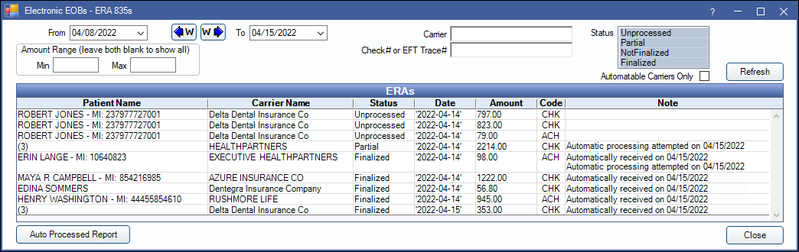
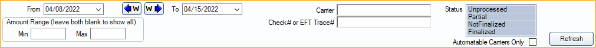
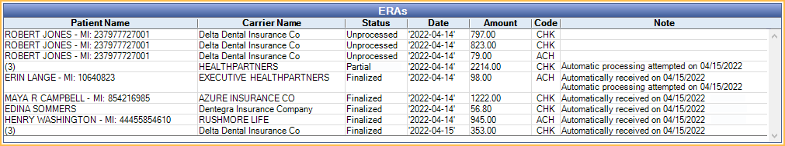

ERAs
ERA 835, also known as Electronic Remittance Advice format, is an electronic explanation of benefits (EOB) that can be electronically downloaded.
In the Manage Module, click ERAs.
Automatic or manually downloaded ERAs can be used to auto-populate insurance paid amounts in to claims to finalize insurance payments.
 See our video: Processing ERAs.
See our video: Processing ERAs.- For setup requirements and steps on processing ERAs and detaching claims, see ERA Workflow.
- Open Dental attempts to automatically attach claims to ERAs. For more information and instructions for manually attaching claims to ERAs see, ERA Match with Claim
Filters
Use the filter options to change the ERAs listed in the ERAs grid. Click Refresh to update results after making changes. Filter options may change based on Enterprise Setup Manage settings.
- From/To: Change the date range. Click the down arrow to select dates from a calendar then click the up arrow to collapse the calendar. Click the W buttons to jump back or forward one week. Results are refreshed automatically when the date is changed.
- Amount Range: Only show ERAs within a certain payment amount range.
- Min: Minimum payment amount to show.
- Max = Maximum payment amount to show.
- Leave blank to show all ERAs regardless of payment amount.
- Control ID: Filter by Control ID. Only shows if enabled in Show Features.
- Carrier: Filter by carrier. Users can search by partial name.
- Check# or EFT Trace#: Only show ERAs for a specific check number or EFT trace number.
- Clinic: Filter by clinic. If an ERA has more than one clinic, multiple are listed in the grid.
- Status: Filter by ERA processing status. By default, ERAs received in the last 7 days that have a status of unprocessed, partial, or not finalized are listed.
- Unprocessed: ERAs that have not been processed at all (no claims are received).
- Partial: ERAs with some claims that are received, and others that are not.
- Not Finalized: ERAs with claims that are received, but still need to be finalized.
- Finalized: ERAs with a finalized payment.
- Automatable Carriers Only: Determines if all carriers display, or only carriers that allow ERA automation.
- Checked: Displays only carriers that allow ERA automation.
- Unchecked: Displays all carriers.
ERAs Grid
ERAs matching the filter criteria are listed in the ERAs grid. Double-click an ERA to Process and view EOB Claim Details.
- Patient Name: Lists the patient on the ERA. If more than one patient is associated with an ERA, the number of claims on the ERA shows in the Patient Name column instead of a name.
- Carrier Name: Lists the carrier on the ERA.
- Status: Current status of the ERA.
- Date: Date of the ERA.
- Amount: Amount of the ERA.
- Clinic: Displays which Clinic the ERA is assigned to, or unassigned if not assigned to a clinic.
- Code: Code types are used to determine payment methods. The following codes are used:
- ACH: Automatic clearinghouse (Direct Deposit)
- CHK: Paper check
- NON: No payment issued
- FWT: Federal wire transfer
- BOP: Financial Institution Option
- ControlID: Transaction set control number. This number is assigned by the carrier and is used to identify the ERA group and interchange. Only shows if enabled in Show Features.
- Note: Displays notes entered on the ERA. Also displays a note if Automatic Processing was attempted, when ERA Automation is set to Semi-automatic or Fully-automatic in Preferences.
ERAs can also be viewed and processed via the Insurance Claims window, History grid (see Send Claims).
Auto Processed Report
Auto Processed Report: Click to launch the ERAs Automatically Processed Report to view ERAs where automatic processing has been attempted or completed.